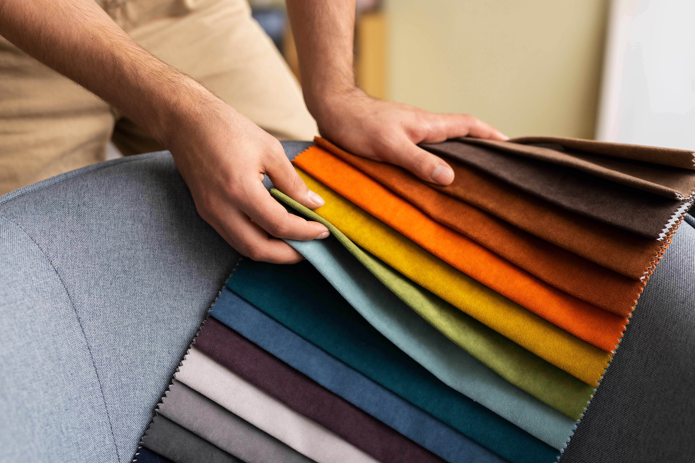

Featured Fabrics
Versatile. Reliable. Sustainable.
A wide range of polyester fabrics crafted for performance and purpose — from everyday essentials to specialized global fashion applications.
Core Collection
Solids
Solid-dyed polyester fabrics with uniform color saturation, consistent GSM, and high color-fastness across lightweight and structured weaves.
Mélange & Tone
Heathers
Two-tone and heathered textures made with specialized dope-dyed filaments and blended yarns for a rich, visual depth.
Yarn-Dyed Effect
Chambrays
Woven with contrasting dyed warp and white/neutral weft yarns, creating a subtle cross-dyed chambray luster with easy draping.
Geometric & Micro-Patterns
Dobbies
Intricate dobby-loom geometric textures including dots, checks, waffles, and micro-structures that elevate essential garments.
Technical & Structured
Specialty Weaves
Engineered weave constructions including ripstops, jacquards, ottomans, and tactile surfaces designed for outerwear and modern tailoring.
Optimized for Printing
Print Bases
Prepared-for-print (PFP) fabric bases engineered for deep ink absorption, crisp pattern definition, and rich color brilliance across digital printing.
Custom Requirements
Don't see what you need?
We engineer bespoke yarn constructions, custom dye shades, and tailored fabric finishes to meet your exact product specifications.
Get in Touch